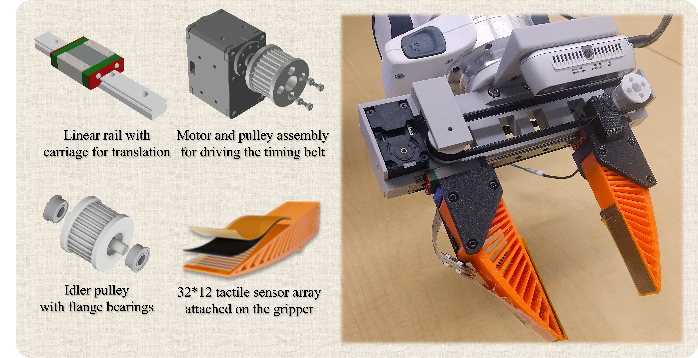
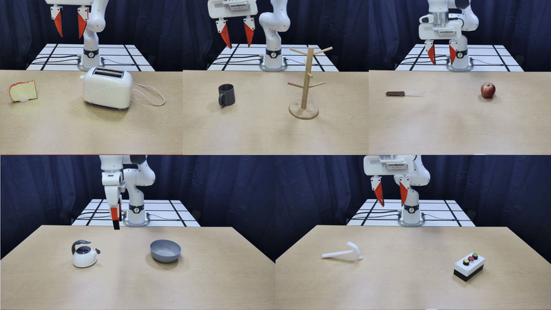
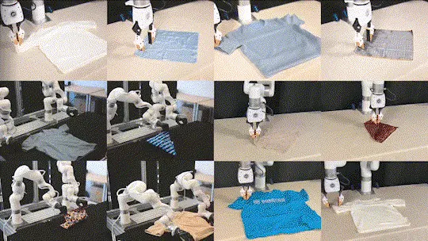
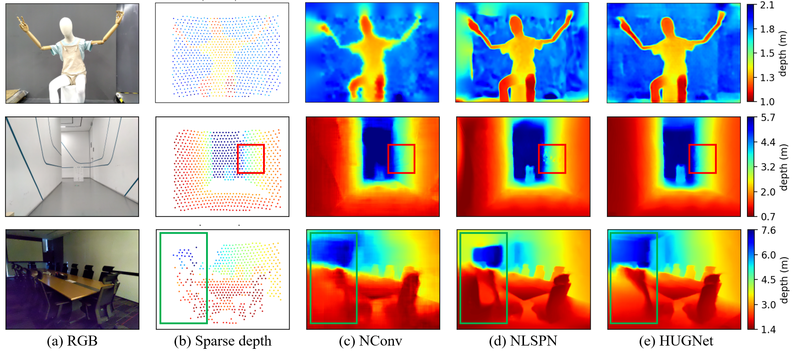

Universal Low-Cost Force-Controlled Gripper for Learning Delicate Object Grasping
In Submission, 2025
TL;DR: A versatile and affordable force-controlled gripper with tactile sensors for delicate object manipulation tasks.
Robotics Researcher
Hi, my name is Tongxuan Tian. I am a researcher in robotics.
I received my bachelor's degree from Tongji University and my master's degree from the University of Virginia. I am grateful to all collaborators who have supported and shaped my journey.
I aim to build robots that bring value to humans. Towards my goal, I study the emergence, alignment, and democratization of physical intelligence. If you find my work interesting, feel free to reach out.
Contact: tongxuan259 [at] gmail (dot) com

In Submission, 2025
TL;DR: A versatile and affordable force-controlled gripper with tactile sensors for delicate object manipulation tasks.

Conference on Robot Learning (CoRL), 2025
TL;DR: A novel framework using vision foundation models for one-shot 3D affordance learning for robotic manipulation.

Conference on Robot Learning (CoRL), 2025
TL;DR: A novel approach for estimating and learning cloth state and dynamics with diffusion models for cloth manipulation.

International Journal of Computer Vision (IJCV), 2024
TL;DR: We propose the deep unrolled Weighted Graph Laplacian Regularization (WGLR) for depth completion task which enforces input constraints in the network design.